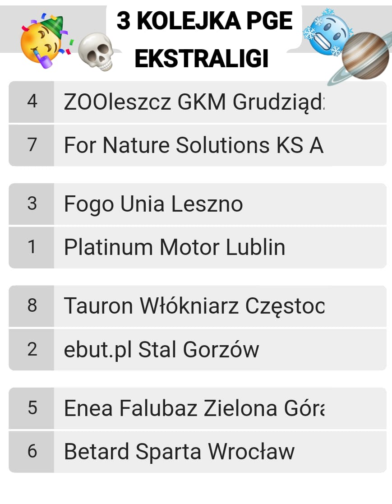
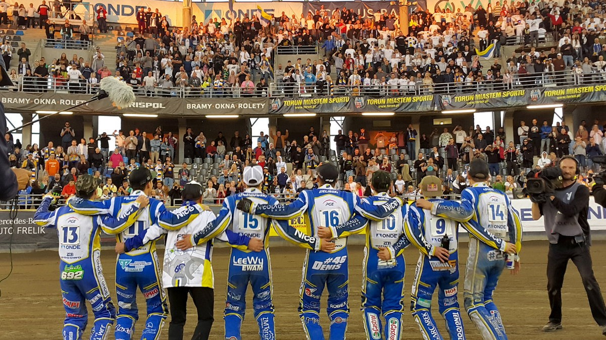
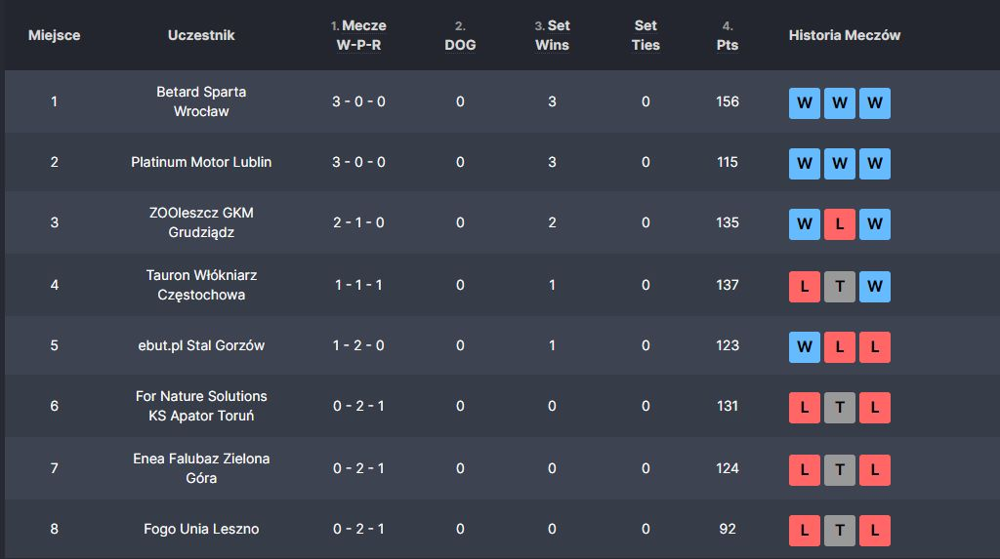

Newsy ze świata SC2023!!!
3 Kolejka symulowanej PGE Ekstraligi

Właśnie zakończyła się 3 kolejka symulowanej PGE Ekstraligi i o to wyniki
Wrocław rozdudnił Falubazów wynikiem 51:39 (bez większego zaskoczenia)
Grudziądz Toruń jak to derby było dosyć ciekawie finalnie zakończyło się wynikiem 48:42 dla Grudziądza. Były mała zadymka pod stadionem ale zakończyło się bez śmierci
I jakiś Mikol ukarał Toruń za to
Leszno Lublin zostało odwołane a Lublin wygrywa bo Michał tak mówi
Częstochowa rozdudniła Gorzów wynikiem 52:38
I jak wam źle albo dobrze w życiu to kup Red Bull Energy to będzie lepiej (materiał sponsorowany)
Toruń zaplanował zamieszki w meczu z Grudziądzem?

Jako iż ostatnio odbyły się zamieszki na meczu Toruń Grudziądz pojawiło się dużo podejrzeń dlaczego to się stało
Kilka anonimów twierdzi że "ludzie odpowiedzialni za Toruń brali w tym udział" dalej jest to tylko spekulacja ale nie mamy o czym pisać więc taki smaczek
Mnom
Stal nie dostanie się do playoffów? Omówienie początka sezonu

Już po 3 kolejkach powracającej symulowanej PGE Ekstraligi dostaliśmy w tabeli kilka zaskoczeń a dzisiaj omówimy wszystkie z nich
Zaczynając od końca mamy Unie Leszno która najsłabiej otworzyła ten sezon z 2 porażkami i 1 remisem. Dużo osób nie spodziewało się takiej formy Leszna ale warto też patrzeć na to że jeden z trzech meczów Unii został odowłany
Co sprawiło że z tamtego meczu Unia zgarneła tylko 10 punktów
Również podobnymi wynikami co Unia Leszno może się pochwalić Falubaz Zielona Góra oraz Apator Toruń akurat to nie wydaje się być zbyt dużym zaskoczeniem
Wyżej na 5 miejscu mamy Stal Gorzów która otworzyła sezon wygraną i dwoma porażkami najbardziej zaskakującą z Częstochową. Było by to ogromnym zaskoczeniem gdyby Stal nie weszła do playoffów
Następnie mamy na 4 miejscu Włókniarz Częstochowe która świetnie otworzyła sezon jedną wygraną remisem i porażką jednak nad Częstochową mamy największe obecnie zaskoczenie
czyli GKM Grudziądz który jak na razie trzyma się na 3 miejscu w tabeli dwoma wygranymi i jedną porażką obstawiam że nikt się nie spodziewał tego wyniku
A na górze tabeli mamy obecnie dwóch gigantów czyli Motor Lublin i Sparte Wrocław którzy jeszcze nie przegrali ani jednego meczu
Sezon już zapowiada się ciekawie a jeszcze wszystko przed nami i jak chcecie być lepsi w życiu od innych to pijcie Red Bull Energy(materiał sponsorowany)